Префектура Кагосима · Амами-Осима · природа и культура
Амами-Осима: субтропический лес, редкие звери и остров, где люди живут с древности
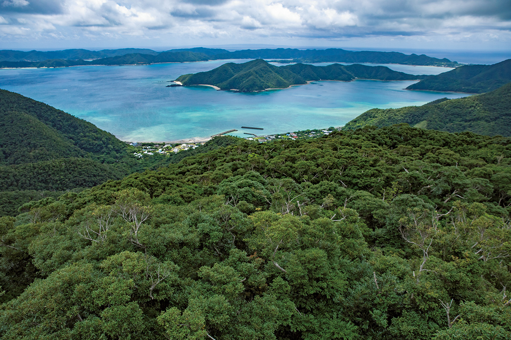
Амами-Осима лежит на полпути между городом Кагосима и Окинавой, и большую часть острова покрывает лес. 26 июля 2021 года остров вместе с Токуносимой, севером Окинавы и Ириомотэ вошёл в список всемирного природного наследия ЮНЕСКО.
Остров
Дождливый остров в сухих широтах
На Амами-Осиме живут звери и растения, которых больше нет нигде на свете, а люди селились здесь ещё в эпоху Дзёмон. Если понять, как сложилась природа острова, поездка становится гораздо интереснее.
По площади Амами-Осима третий остров Японии после Окинавы и Садо, длина его береговой линии около 460 км. Равнин здесь мало: больше 80% территории занимает лес, а самая высокая вершина, гора Юван-дакэ, поднимается на 694 м.
На этих широтах по всему миру преобладают засушливые земли, но на Амами выпадает около 3000 мм осадков в год, вдвое больше, чем в Токио. Поэтому здесь вырос субтропический влажный лес, редкий для планеты. Издали вечнозелёные широколиственные леса с каштанником судадзии похожи на леса тёплых районов к северу от Якусимы, но внутри растут древовидные папоротники и другие субтропические деревья. Сюда часто приходят сильные тайфуны: они валят деревья, в лесу появляются просветы, и деревьям не приходится так жёстко бороться за свет. Это одна из причин, почему здесь уживается столько разных пород.
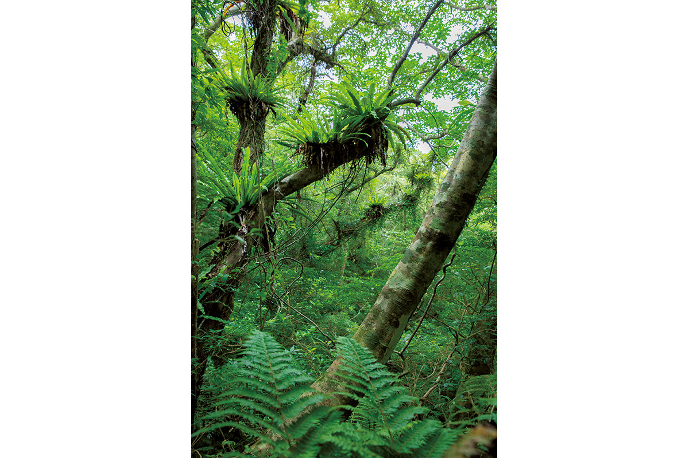
Лес
Первобытный лес Кинсакубару
В лесу Кинсакубару, почти в самом центре острова, сохранилось много вечнозелёных широколиственных деревьев. Древовидный папоротник хикагэхэго называют живым ископаемым: самые крупные вырастают выше 10 м, местами они стоят целыми рощами.
Главная особенность этого леса в эпифитах, растениях, которые живут на других деревьях. Во влажных субтропиках они не паразитируют на хозяине и не берут у него питание, а просто прикрепляются к стволу. Так на ветвях растут папоротники, например асплениум гнездовой.
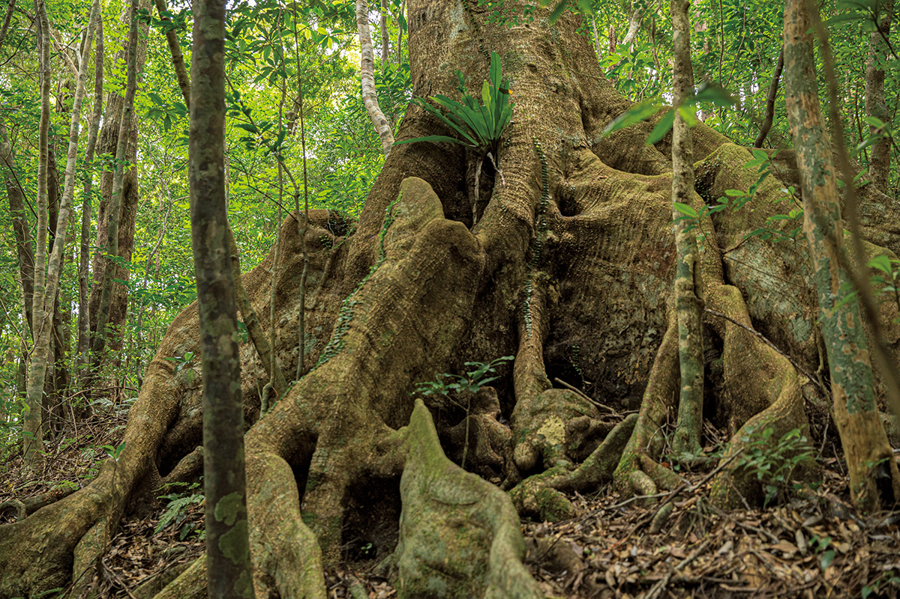
Разнообразие жизни держится не только на этом лесе. Облачный пояс на вершинах, хребты и долины, горы, изрезанные реками, болотистые низины в устьях: везде свой лес. Если убрать хотя бы одну часть, понять природу этого края целиком уже не получится.
Культура
Саговники и художник Иссон Танака
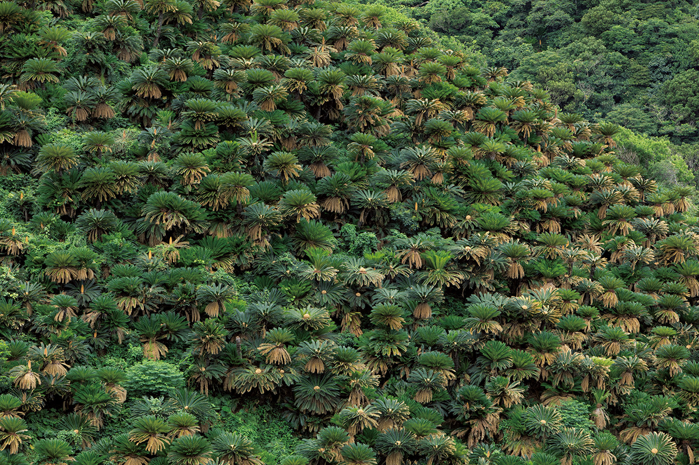
Природа Амами покорила художника Иссона Танаку, и около 50 лет он переехал на остров. На его картинах, начиная с самой известной, «Берег с панданусами», в смелых композициях и ярких красках появляются алоказия, мусенда и другие субтропические растения, а ещё птицы вроде рыжего зимородка. Его работы хранит Мемориальный музей Иссона Танаки в парке «Амами» префектуры Кагосима, где также рассказывают о природе и истории острова.
Животные
Амамийский кролик и змеи на вершине пищевой цепи
Считается, что живой мир Амами-Осимы отделился от материка уже 5 млн лет назад. Амамийский кролик, по всей видимости, когда-то жил и на Евразии, но там исчез, когда появились хищники и соперники. Сегодня на островах Нансэй он встречается только на Амами-Осиме и Токуносиме.
Хищных зверей и крупных хищных птиц на острове нет, поэтому на вершине пищевой цепи стоят змеи: крупная хабу длиной до 2 м и акамата. Амамийский кролик ведёт ночную жизнь и рискует встретиться с хабу, но он приспособился: роет норы для потомства на склонах, а кормится и оставляет помёт на открытых речных отмелях, где далеко видно. Остров долго был отрезан от других земель, поэтому редкие эндемики есть во всех группах: среди зверей амамийская колючая мышь, среди птиц лиловая сойка, среди земноводных амамийская лягушка Исикавы, среди насекомых жук-олень амами-марубанэ.
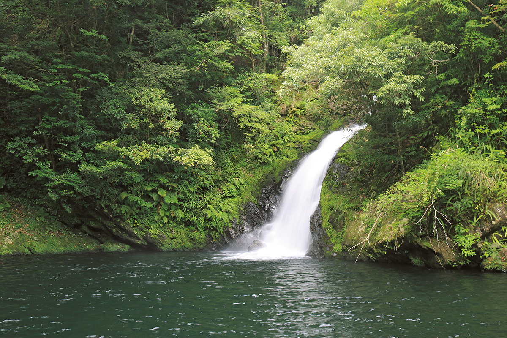
Необычный климат и рельеф дали острову множество разных природных сред, и в каждой живут приспособившиеся к ней редкие виды. Вместе с обычными растениями и животными они и создают здесь исключительно высокое биоразнообразие.
Люди жили на Амами уже в эпоху Дзёмон: охотились, ловили рыбу, возделывали поля. Сегодня на острове около 60 000 жителей. Деревенские ландшафты, которые сложились за века такой жизни, тоже добавляют острову разнообразия. Теперь главная задача в том, чтобы беречь природу и найти, как людям и дикой природе жить рядом и дальше.
Растения и птицы
Что можно увидеть на острове
Ехать на Амами-Осиму стоит не только ради моря: оставьте достаточно времени и на места, где природу видно вблизи.
На острове встречаются субтропические растения, для которых Амами северная граница ареала (например, дерево сакисима-суоноки), и северные виды, для которых он южная граница. Всего здесь больше 1300 видов растений: от высоких деревьев хикагэхэго и идзю до эндемиков вроде редкого папоротника амами-дэнда, копытней, по которым можно проследить историю острова, и орхидеи амами-эбинэ. С февраля, когда горы окрашиваются молодой зеленью, и весь год что-нибудь цветёт.
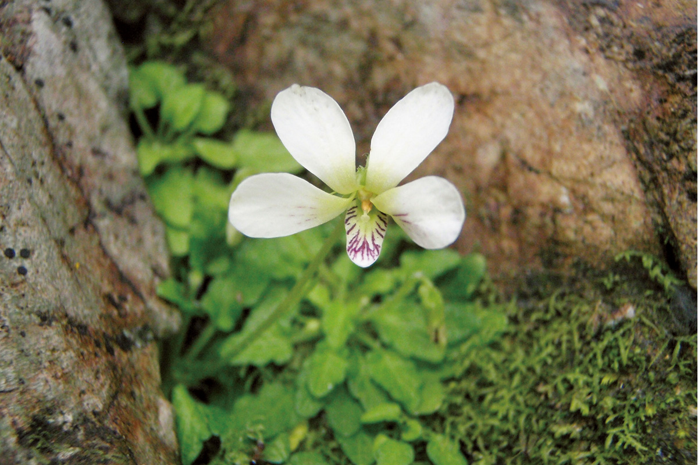
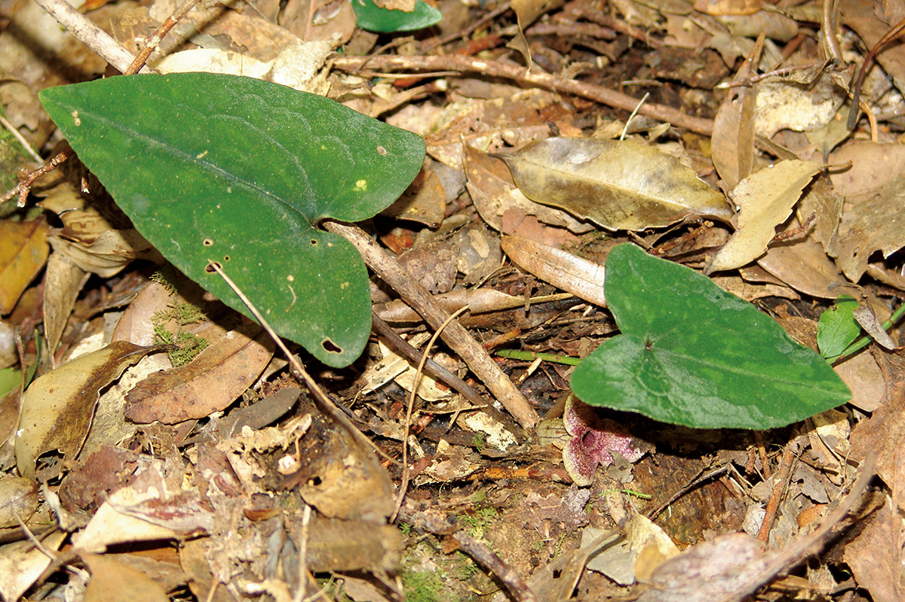
Из местных наземных млекопитающих на острове 13 видов, и 8 из них эндемики, включая исчезающих амамийского кролика и амамийскую колючую мышь. Остров известен и среди любителей птиц: здесь можно увидеть 315 из 633 видов, отмеченных в Японии, то есть почти половину. Среди них эндемики лиловая сойка и амамийский вальдшнеп, а ещё рюкюский рыжий зимородок, красивый и видом, и голосом. У земноводных, например бородавчатого тритона и лягушки оттон, доля эндемиков достигает 90%.
Где узнать
Пять мест, чтобы понять остров
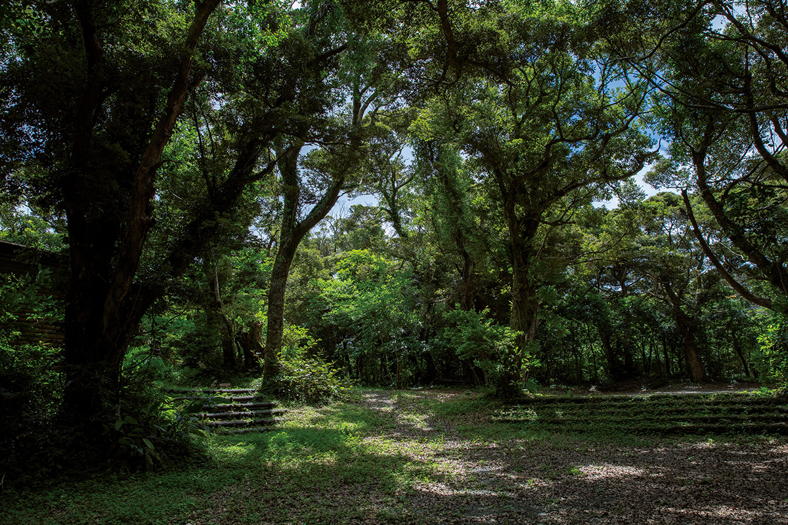
Лес Амами Сидзэн Кансацу но Мори входит в национальный парк. По просторной территории проложены тропы, и гуляя по ним, можно наблюдать местные растения, птиц и насекомых. Это одно из главных мест для наблюдения за птицами на острове, и любители приезжают сюда в любое время года.
Амами Сидзэн Кансацу но Мори
- Адрес
- префектура Кагосима, уезд Осима, посёлок Тацуго, Эн, 1193
- Телефон
- +81 997-54-1329
- Часы работы
- 9:00–16:00
- Выходные
- без выходных
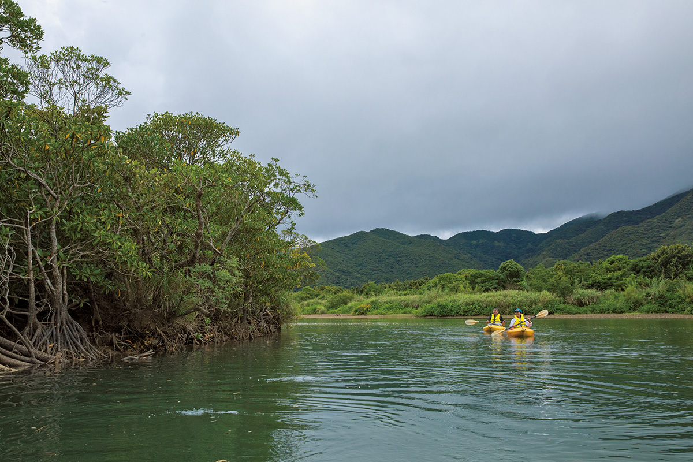
Чтобы узнать о мангровых лесах, приезжайте в парк «Куросио но мори». С опытным гидом вы выходите на каноэ в мангровые заросли и вблизи знакомитесь с экосистемой, которая есть только на этих островах. В парке также есть лужайка и смотровая площадка.
Мангровый парк «Куросио но мори»
- Адрес
- префектура Кагосима, город Амами, Сумё-тё, Исихара, 478
- Телефон
- +81 997-56-3355
- Часы работы
- 9:30–18:00 (вход до 17:30)
- Выходные
- без выходных
Центр охраны дикой природы Амами рассказывает о природе каждого острова архипелага. Об амамийском кролике и других редких животных здесь говорят на примере чучел и материалов исследований. Посетителям нравятся сведения о наблюдениях, которые обновляют каждый сезон.
Центр охраны дикой природы Амами
- Адрес
- префектура Кагосима, уезд Осима, деревня Ямато, Омокацу, 551
- Телефон
- +81 997-55-8620
- Часы работы
- 9:30–16:30
- Выходные
- понедельник (если праздник, то следующий день)
Парк «Амами» префектуры Кагосима служит воротами острова: до него 5 минут на машине от аэропорта Амами. Здесь есть выставочный зал о природе, культуре и истории Амами и Мемориальный музей Иссона Танаки, художника, который всю жизнь писал природу острова.
Парк «Амами» префектуры Кагосима
- Адрес
- префектура Кагосима, город Амами, Касари-тё, Сэцута, 1834
- Телефон
- +81 997-55-2333
- Часы работы
- 9:00–18:00 (в июле и августе до 19:00)
- Выходные
- первая и третья среда месяца (если праздник, то следующий день)
Музей Амами города Амами единственный на архипелаге музей широкого профиля. В нём рассказывают о природе и животных, об истории и культуре островов. Живых животных здесь держат в экспозиции, а в отдельном уголке можно попробовать поработать на ткацком станке.
Музей Амами
- Адрес
- префектура Кагосима, город Амами, Надзэ-Нагахама-тё, 517
- Телефон
- +81 997-54-1210
- Часы работы
- 9:00–17:00 (вход до 16:30)
- Выходные
- третий понедельник месяца
Туры
Лес с сертифицированным гидом
Чтобы увидеть природу Амами, присоединяйтесь к туру с эко-гидом, которого сертифицировал совет по развитию экотуризма архипелага Амами. В лес Кинсакубару ради охраны природы без такого гида не пускают. Гид знает лес и не только показывает красивые виды, но и помогает заметить то, мимо чего легко пройти.
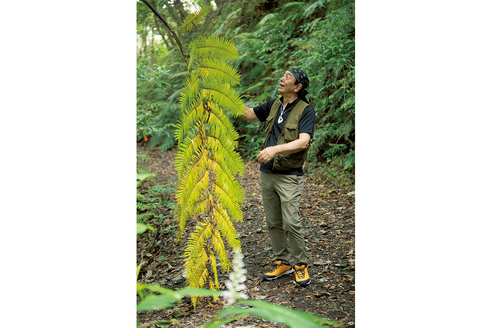
Сертифицированные эко-гиды Амами
Еда и ночлег
Кэйхан, отель у моря и старый дом в деревне
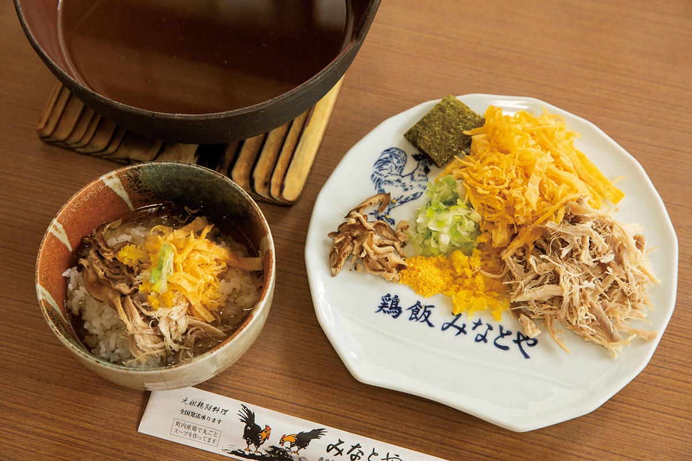
«Кэйхан гансо Минатоя» открылась в 1946 году и готовит только кэйхан, местное блюдо Амами, которое здесь, по словам самого заведения, и придумали. На рис кладут курицу, яйцо, грибы сиитакэ, зелёный лук и сушёную мандариновую корку, а сверху поливают густым бульоном из целой курицы, сваренной до мягкости (1100 иен в 2021 году). Место популярное, бронь не принимают, поэтому приходите с запасом времени.
«Кэйхан гансо Минатоя»
- Адрес
- префектура Кагосима, город Амами, Касари-тё, Сотоганэку, 81
- Телефон
- +81 997-63-0023
- Часы работы
- с 11:30 до окончания бульона
- Выходные
- нерегулярно
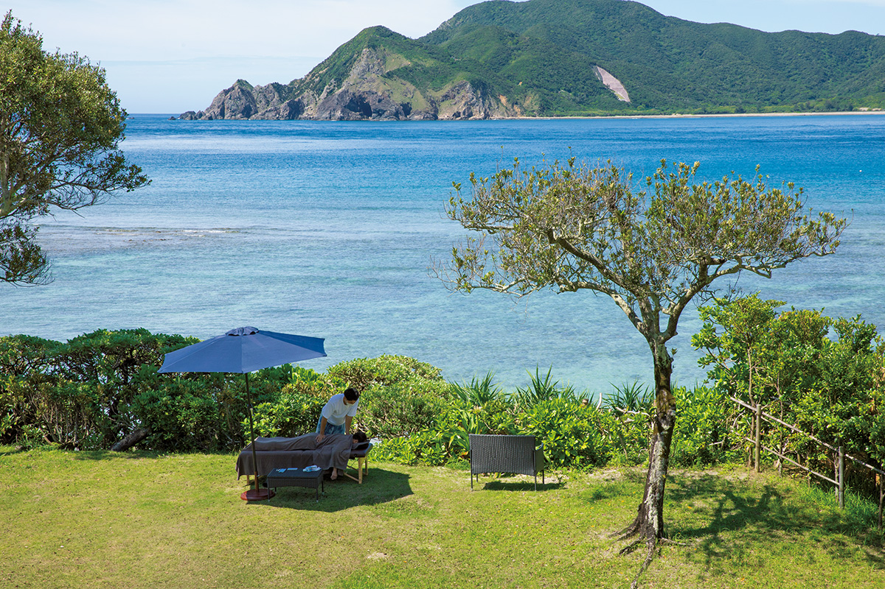
THE SCENE стоит в посёлке Сэтоути, на самом юге острова, в 2 часах езды от аэропорта Амами. Прямо перед отелем пляж Ядори, где можно заняться морскими видами спорта, а ещё здесь много йоги с видом на море и процедур. Сам отель называет себя местом, где очищаются тело и душа. Ночь с завтраком и ужином стоила от 33 000 иен с налогом и обслуживанием в 2021 году.
THE SCENE
- Адрес
- префектура Кагосима, уезд Осима, посёлок Сэтоути, Сокару, 970
- Телефон
- +81 997-72-0111 (7:00–22:00)
- Цены / Вход
- от 33 000 иен за ночь с завтраком и ужином (с налогом и обслуживанием, 2021 год)
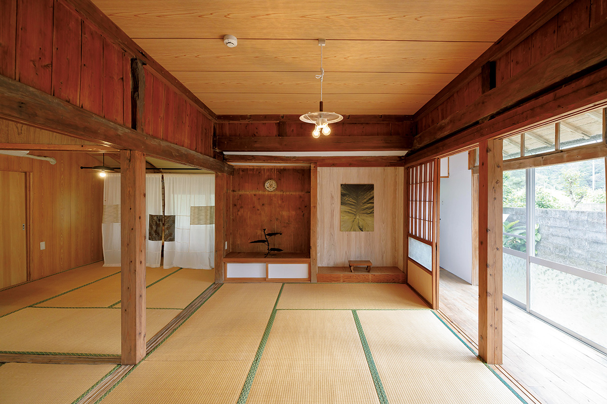
«Дэнпаку» сдаёт гостям старые дома, построенные по традиционной технике Амами: каркас хикимон, приподнятый над землёй пол. Дом снимают целиком, кухня есть, и можно пожить в деревне так, будто вы здесь живёте. Некоторые дома стоят прямо у моря. Цель проекта в том, чтобы передать следующим поколениям традиционную архитектуру Амами и уклад деревень. Ночь без питания стоила от 5500 иен с налогом и обслуживанием в 2021 году.
«Дэнпаку», старые дома
- Адрес
- у каждого дома свой
- Цены / Вход
- от 5500 иен за ночь без питания (с налогом и обслуживанием, 2021 год)
- Сайт
- den-paku.com
Дорога
Как добраться до Амами-Осимы
Самолётом из Токио, от аэропортов Ханэда и Нарита, до аэропорта Амами от 2 ч 15 мин до 2 ч 40 мин. Из аэропорта Итами в Осаке около 1 ч 45 мин, из аэропорта Кагосима около 1 часа.
Паромом от нового порта Кагосимы до порта Надзэ около 11 часов, от порта Наха на Окинаве около 13 ч 30 мин.
Фото: Ёсихито Одзава.